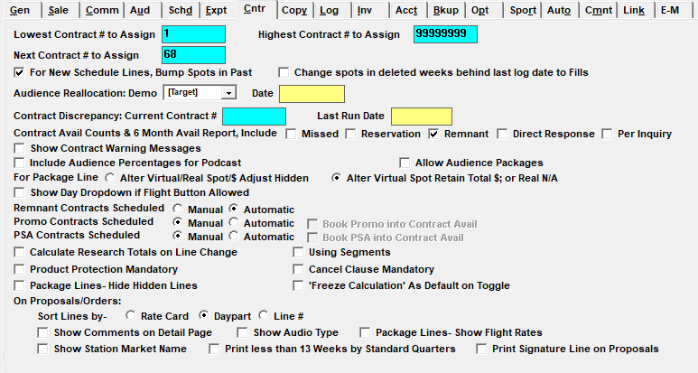

Contract

Lowest Contract Number to Assign, Highest Contract Number to Assign, Next Contract Number to Assign: These questions determine the lowest contract, highest and next contract numbers to assign. They should be configured when first setting up the system. The Next Contract # will automatically update incrementally as new contracts are entered.
For New Schedule Lines Bump Spots in Past: This setting should be checked. The only time it should be unchecked is during initial database setup when past contracts must be entered but no spots should be created for those spots in the past.
Change Spots in Deleted Weeks Behind Last Log Date to Fills: When this option is checked, Unbilled, Current, and Logged Weeks can be altered. Contracted spots get changed to Fill spots when the week that they were ordered in gets zeroed out on the contract. Open (future) weeks can be altered. Contracted spots and Makegoods will be deleted if the week in which they were ordered has been zeroed out. Only users set to “Change Contracts in Past with Unbilled Spots” in User Options->Selected Fields will be able to change these spots to Fills.
Audience Reallocation Demo and Date: This feature is no longer available.
Contract Discrepancy: Current Contract Number: This field is only updated when generating the Spot Discrepancy report for all contracts. The Contract number displayed is the contract that is currently being processed.
Include Missed in Demo Bar Avails: If checked, this will include missed spots as sold inventory in the Demo Bar avails. This may affect the Demo Bar’s speed. (Version 7.0 and prior.)
Contract Avail Counts & 6 Month Avail Report, Include: Missed, Reservation, Remnant, Direct Response, and Per Inquiry spots can be checked here on to include them on the Demo Bar avails count and on the Six Month Avails report, or not checked on to exclude them. This setting also affects the calculation of the Inventory Valuation on the Sales vs. Plan report. (Version 7.1 and above.)
Show Contract Warning Messages: If checked, additional warning messages will appear when saving a proposal or order such as: Share of Budget does not equal 100% or Revenue Sets not defined.
Include Audience Percentages for Podcast: Version 7.1 and above. Whether this option is checked on or off sets the default setting for the "include audience % for podcast" checkbox on the Proposals/Contracts report screen, and the contract snapshot. If the "include audience percentages for podcast" Site Options setting is checked on, then the "include audience % for podcast" report option will be checked on by default. If the "include audience percentages for podcast" Site Options setting is not checked on, then the "include audience % for podcast" report option will not be checked on by default. Typically, this new Site Option setting will be checked on. However, if there are vehicles set to the medium type of Podcast, and the contract report is typically run with the intention of excluding the average rating, GRP, and CPP, then this Site Option setting should not be checked on (although note that this only determines the default setting on the report selectivity screen, and the default can be changed at the time of running the report if needed).
Allow Audience Packages: If checked, you have the option of pricing standard packages by Audience numbers as well as rate, spot count or percentage.
For Package Line: This setting affects rules for editing the price for package and hidden lines that have already been created for rate, percent, and spot count type packages when the "audience package" setting is not enabled. When "audience packages" are enabled, then only the package price can be edited, not the hidden line prices, regardless of how this setting is set.
- If “Alter Virtual/Real Spot/$ Adjust Hidden” is checked on, then the package line price and hidden line price can both be edited. When the package rate is changed, the hidden line prices are recalculated proportionally based on what they were before the change was made. For example, if the package price was doubled, and the hidden line price was 200, it would become 400. When the hidden line prices are changed, the package price is recalculated to equal the hidden line total cost divided by the number of package spots.
- If “Alter Virtual Spot Retain Total $; or Real N/A”: is checked on, the package rate cannot be edited, and only the hidden line prices can be edited. When the hidden line prices are edited, the package price is recalculated to equal the hidden line total cost divided by the number of package spots. This setting does not apply to real packages.
Show Day Dropdown if Flight Allowed: When there's a checkmark in this checkbox, then users that have the Flights button enabled in their User Options settings will also see the mini-flights dropdown sub-screen that appears on the Proposals and Orders screen when clicking in a cell on the weekly grid. For users that do not have the Flights button enabled, they will continue to not see the mini-flights dropdown sub-screen. When the "Show day dropdown if flight button allowed" option is not checked - which is the default setting - then the mini-flights dropdown sub-screen will not appear for any user, regardless of how their User Options flights button access is set (although users with flights button access enabled will continue to be able to access the actual Flights screen from the Flights button). (Version 7.1 and above only.)
Remnant Contracts Scheduled Manual or Automatic, Promo Contracts Scheduled Manual or Automatic, Book Promo into Contract Avail, PSA Contracts Scheduled Manual or Automatic, Book PSA into Contract Avail: These questions all determine whether non-standard contracted spots are created and scheduled automatically, or are manually created as needed. If Promo and PSA spots are automatically scheduled, there are additional questions that either allow or disallow those spot types from scheduling into contract avails. On version 7.1 and above, if Remnant contracts are set to be automatically scheduled, that also enables the “Hide Remnant” Spots screen Action.
Calculate Research Totals on Line Change: This option is unchecked by default. When unchecked, the research totals shown on the Proposal screen in the blue bar in the lower right corner of the screen will not get updated automatically, but users can make it update by clicking it. If the “calculate research totals on line change” option is checked on, then line changes - like spot count changes, price changes, and daypart changes - will cause the totals shown in the blue bar in the lower right corner to update automatically. These settings also affect the research totals shown in the special tabs on the Proposals and Orders screen (currently under development and part of a future release).
Using Segments: If this is checked, the “Segment” field will appear in the header area for proposals and orders. Text entered in the Segment field will print on Certificate of Performance #80 (C80).
Product Protection Mandatory: If checked, you will not be able to save a proposal or order without entering product protection.
Cancel Clause Mandatory: When checked on, the Cancellation Clause field in the contract header area on the Proposals/Orders screen must be filled out before the contract can be saved. The user will also hear a “ding” sound if they try to tab past the Cancellation Clause without entering one. When not checked on, the Cancellation Clause is not mandatory and can be left blank or entered as needed.
Package Lines Hide Hidden Lines: If checked, the hidden lines within a package are not shown on the Proposals and Orders screen but can be viewed by clicking a triangle to the left of the package name to expand the package. When not checked, hidden lines are always visible.
‘Freeze Calculation’ as Default on Toggle: When checked on, this option defaults the “Freeze” toggle on the Proposal and Orders screens to “Freeze Calculation”. When not checked on, by default, the toggle is set to “Unfreeze Calculation”. (This setting only determines the default, the toggle setting can still be changed by clicking it.) Setting the toggle to “Freeze Calculation” stops different auto-calculated fields from being computed in order to speed up input on the Proposal and Orders screens. (Available on version 7.1 and above.)
On Proposals/Orders
Sort Lines by Rate Card, Daypart or Line Number: This setting affects the sort order for contract lines on the Proposals/Orders screen and invoices. The sort order used by each setting is listed below.
- Rate Card: Owner Sort #; Vehicle Sort #; Vehicle Name; Rate Card Sort #; Line #; RevNo; Prop#.
- Daypart: Owner Sort #; Vehicle Sort #; Vehicle Name; Daypart Sort #; Line #; RevNo; Prop#.
- Line Number: Owner Sort #; Vehicle Sort #; Vehicle Name; Line #; Line #; RevNo; Prop#.
For all three sort options, it always begins with owner sort # (first vehicle participant – the sort number is viewable on the participant screen), then vehicle sort # (viewable on the Vehicle Options screen), then vehicle name (alphabetical), followed by either daypart sort code (viewable on the daypart screen itself for that specific daypart), rate card sort number (the sort number shown on the rate card screen for a given vehicle), or line number.
Note: one exception to these rules is on the Proposal/Order screen, where package lines and hidden lines are sorted before sorting the standard lines and only the package lines are sorted in number order.
Show Comments on Detail Page: If checked, comments will appear on the detail proposal/order print out instead of only appearing on the summary print out.
Show Audio Type: When checked on, this will make the audio type appear on the Proposals/Contracts report, Insertion Orders and Invoices when the vehicle Medium Type is set to Podcast in the Traffic Vehicle List screen->Options->General tab. Audio Types are defined in the Proposal/Order screen Override Audio Type box. The choices are:
- LC: Live commercial
- LP: Live promo
- RP: Agency promo
- PC: Pre-recorded commercial
- PP: Pre-recorded promo
- RC: Agency commercial
Note: the promo copy options are only available if "using promo copy with schedule lines" is enabled in the Traffic Site Options->Copy tab.
Package Lines Show Flight Rates: When this option is checked on, if the weekly rate for a package varies across the flight, the proposals/contract report will show the varying rate when running the report with the “hidden lines” option not checked. When this option is not checked on and the weekly package rate varies across the flight for a single line, an average rate will be shown in the Unit Rate field for the package line, averaged across the flight span, effectively not showing the varying package unit rate on the proposals/contract report.
Show Station Market Name: When checked on, this makes it possible for the Market Name to appear after the vehicle name on the Proposals/Contracts report and the contract Snapshot report for both the detail and summary pages. For rep vehicles, the market name will be pulled from the Affiliate system Station information, if it exists (using the call letters that match the vehicle name), and if not, then the Market defined on the Vehicle Options screen for that vehicle will be used instead. For conventional and selling type vehicles, for the market name to be included on the report, on the Vehicle Options screen Barter tab, the "Include on Insertion Orders" checkbox must be checked on. If it is, then the market name will be pulled from the Affiliate system Station information (using the call letters that match the vehicle name), and if it's not defined on the Affiliate system, then the market will be pulled from the Vehicle Options Market field.
Print Less Than 13 Weeks by Standard Quarter: The Proposal/Order prints 13 weeks per page. If this option is selected, the first 13 weeks are based on the standard broadcast quarter, not the first week the buy is active. (On version 7.0 and earlier, this setting appears on the Sales tab.)
Print Signature Line on Proposals: When checked on, the signature line normally shown on the detail page of the proposals/contracts report and contract snapshot will be shown on proposals (working, completed, etc.) on the detail page for air time and NTR proposals.